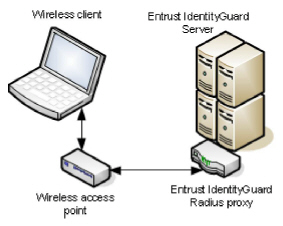

|
IdentityGuard Server 11.0 Administration Guide |
|
IdentityGuard Server 11.0 Administration Guide |
When you integrate Entrust IdentityGuard into a wireless network, the Radius proxy receives messages from the wireless access point.
Note: In the following figure, the Entrust IdentityGuard Radius proxy is shown as a separate physical entity just for illustration. In reality, it is a component that resides on the Entrust IdentityGuard Server.
Radius proxy integrated with a wireless network

One-step authentication with a wireless access point using the EAP protocol follows these steps:
1. A user enters authentication credentials (user name and second-factor credentials) into the wireless access client.
2. The wireless access client sends the credentials to the wireless access server, which forwards them to the Entrust IdentityGuard Radius proxy.
3. The Radius proxy forwards the credentials to Entrust IdentityGuard.
4. Entrust IdentityGuard generates either an accept message (the user passed authentication) or a reject message (the user failed authentication).
5. Entrust IdentityGuard then sends a message to the Radius proxy. The Radius proxy forwards the message to the wireless access server.
If the message is a reject message, then the user failed second-factor authentication. If the message is an accept message, then the user passed second-factor authentication.